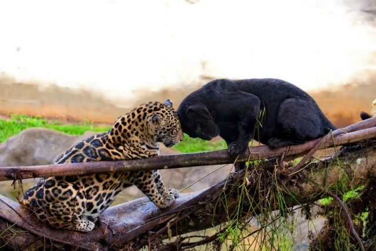

_by_Китоно.jpg)
Самая хитрая кошка
Леопард воплощение гибкости, изящества и скрытности. Благодаря пятнистой желтой шкуре животное совершенно сливается с травой или древесными ветками. Его очень трудно заметить. Иногда его, правда, выдает только свисающий с дерева хвост. Да и его можно спутать с лианой. По силе леопард, конечно, уступает тигру и льву. Да и в беге ему далеко до быстроногого гепарда. Но никто не умеет так бесшумно и ловко под крадываться к жертве, как это делает леопард. Это самая хитрая из всех кошек. Леопард может часами валяться на солнцепеке, прикинувшись мертвым. Только этот хитрец может биться в корчах, стонать и изображать умирающего, подманивая к себе неопытных оленей или верблюдов.
Долгие века люди делили леопардов на два разных вида. Лишь недавно ученые пришли к выводу, что леопард и пантера – одно и то же животное. Черные пантеры – это просто темноокрашенные леопарды. У них, хоть и слабо, но все же видны пятна.
Леопарды обычно ведут ночной образ жизни. Охотятся и живут в одиночку. Рождаются эти животные слепыми и беспомощными. Но уже очень скоро прозревают и начинают свои первые охотничьи вылазки за лягушками и пичужками. К тому времени, когда они уже учатся подкрадываться к добыче, их зрение достигает такой остроты, что им нетрудно вы смотреть добычу за 1,5 километра.
Голос леопарда звучит по-разному. Он может издавать глухое рычание, шипение, хриплые вопли и покашливание, которое означает, что леопард готов напасть на свою жертву.
Средняя длина взрослого леопарда составляет примерно два с половиной метра. Вес его колеблется от 30 до 90 килограммов. Любимые жертвы леопардов – антилопы и молодые буйволы. Он нападает на них с очень близкого расстояния. Как правило, делает огромный прыжок и падает жертве на спину, кусает в загривок и валит на землю. Добычу он утаскивает в укрытие или же забирается с ней на дерево, где ему никто не помешает. Если крупная дичь долго не попадается, то леопард прекрасно обходится мышами, павианами, страусами и даже иногда нападает на крокодилов. В Заире один-единственный де опард однажды перебил целую группу горных горилл. Иногда у леопардов появляется вкус к человеческому мясу. В Индии один леопард за восемь лет убил 125 человек. Другой убил более 400 человек в 77 горных деревушках и наводил по ночам ужас на местное население, пока не был застрелен. Если львы не любят холода, а тигры изнывают от жары, то леопарды прекрасно себя чувствуют и при температуре ниже нуля, и в палящем зное пустыни. Они живут в лесах Африки, в ее саваннах и пустынях, а также горах Индии и на плато реки Янцзы в Китае. Ни одно млекопитающее, кроме волка и человека, не имеет такого широкого распространения (ареала). Недавно был принят закон, запрещающий охоту на леопардов. Но хищник так быстро расплодился, что его отменили. Похоже, леопарду не грозит вымирание.
